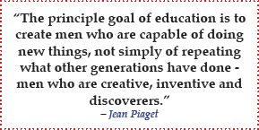

PREVIEW (Phase 1): Preview the Lecture Material
The preview step should be performed within an hour before a lecture or in the morning of the lecture day if class schedule doesn’t allow for preview before lecture. It should take less than 15 minutes. With this step, you’re setting up a framework that will help you make sense of and remember the lecture material.
INPUTS
Sources of information:
- Existing knowledge on the topic.
- Textbook.
- Lecture materials (lecture handouts, lecture presentations, etc.).
THE 4 REPEATING STEPS
Identify key concepts:
- Survey (skim and scan) the textbook and lecture materials.
- Get the big picture from the textbook chapter’s title, headings, subheadings, introduction, and summary. This high-level surveying helps trigger concepts in your long-term memory and move them to your working memory. As we discussed in Chapter 1, connecting new information to existing knowledge will facilitate integration and consolidation of old and new information, allowing you to learn better and faster.
- If information is brand new, your brain will begin creating a new framework for this information.
- In this phase, you begin developing the visual map skeleton and roadmap for the other phases.
- Next, add key concepts (bolded terms, italicized terms, formulas) and summarize key visuals (pictures, diagrams, tables, charts, graphs, etc.) by skimming the text book chapter. Don’t read the entire chapter because it will be discussed in the lecture and you’ll forget the irrelevant details anyway. For key concepts, you can add definitions in the notes section of your visual map (don’t clutter the visual map) and you can also reference important visuals in the notes section (again, avoid clutter). As you’re adding the key concepts, ask yourself why they’re important.
- Do the same (big picture, key concepts, and key visuals) for lecture materials, if there are any.
- Add what you think you already know about this topic and what you have studied in the past (what comes to mind with this topic)?
- How does the new material integrate with your existing information?
- Skip the remaining material. You won’t remember it at this state anyway and you’ll come back to it in the process phase.
Organize and connect key concepts in your visual map in a meaningful way:
- Begin organizing and connecting the concepts. Look at the best way to lump the information.
- How can you meaningfully integrate this information so you understand the big picture and key details?
Think critically:
- Be fully aware and inquisitive (review step 3 in Section 3.3).
Ask key questions:
- Finding questions at this point won’t be difficult. It’s normal to be confused at this stage, which means you’ve done a good job informing yourself.
- Skim over questions from the lecture material (within the chapter, end of chapter, teacher’s questions, etc.).
- You should also have plenty of your own questions that have arisen as you’ve organized the visual map. What is still not clear or is confusing to you?
- Prioritize your questions (which questions are most important) and anticipate answers.
- Note that there’s nothing wrong with answering some of your questions by searching online or looking at other books, if you think that you’ll be able to ask better questions once you have the answers to your first ones.
OUTPUTS
Skeleton visual map:
- As always, a little planning goes a long way. With the visual map skeleton that you’ve created, you can let your mind flow and be curious before and during the lecture.
Key questions for the next phase:
- What do you think about the concepts you currently have in your visual map? What do they make you wonder?
- What else do you need to know to increase your understanding of the topic?
- These questions will drive your active participation in the next phase, where you’ll get the answers to your burning questions (if not, you’ll find them in the process phase).
Prepared for the participation phase:
- You’ve acquired a general idea about the topic. You’ve also gained valuable insight and focus that you can take to the lecture.
- Your motivation and interest are enhanced. This will help overcome procrastination and will boost your confidence and ability to learn the new material.
- By previewing the lecture material, you will have been exposed to key concepts and key questions before walking into the lecture. By familiarizing yourself with key concepts, you will also have become engaged in the topic, begun framing the topic, and activated your brain to learn.
- By taking these few minutes up front to preview the material, you won’t be wasting precious lecture time getting oriented, or worse, getting lost altogether.
Learning:
- By actively identifying key concepts, organizing and connecting them using a visual map, critically thinking, and asking key questions, you’re efficiently and effectively learning.
Read Case Study
PARTICIPATE (Phase 2): Participate Actively in Lectures
You can’t participate in lectures if you haven’t previewed the material before the lecture. You also can’t participate in lectures if you don’t attend classes. Always attend lectures. If you miss a lecture, get your classmate’s notes on the lecture, although they probably won’t be as good as if you had taken them yourself and will take you longer to process.
Even if your teacher gives very detailed lecture notes, you’ll be missing out on the interaction if you skip class. Teachers will often point out in lectures what’s of primary importance and will emphasize relationships that can’t be extracted from lecture notes alone.
Lectures are personal. Regardless of the class size, each student has the power to ask a question at any time and get clarification of a concept. Lectures are your prime opportunity to ask questions as they come up in your learning process, thus making the integration of material more effective.
Students often perceive lectures as a waste of time, when they can actually be a very efficient use of study time. Your teacher has spent a lot of time preparing and organizing the material. Just imagine trying to go through those lecture notes on your own in the mere hour or so that your teacher does it.
INPUTS
Sources of information:
- Existing knowledge on the topic, including that from preview phase.
- Lecture presentation.
THE 4 REPEATING STEPS
Identify key concepts:
- Go to class on time and prepared with your initial visual map.
- Pick a good location in class, one where you can see, hear, be heard, and won’t have any distractions.
- You can’t possibly write down every word of a lecture, and you shouldn’t try. Instead, you should listen and look for key concepts that you’ll incorporate into your visual map, using as few words as possible. You shouldn’t write sentences, and don’t worry about spelling.
- Don’t audio record lectures; hearing the lecture once is enough.
- Make references to important diagrams.
- Be an active listener. Listen more and write less. Pay attention, don’t space out, and capture ideas, not words.
- Be an analytical and critical thinker: evaluate the evidence and conclusions presented.
- Assign question marks to concepts and areas that didn’t make sense to you so you can address them in the next phase or ask the teacher about them after class.
- Be an active participant by realizing that lectures are a two-way communication, not a solo performance by your teacher. You should ask key questions to help you fill in the gaps in your visual map. Ask for missing information, for an explanation of how this information relates to other pieces, and for clarification of what’s important when a lot of details are presented. You should also ask for examples when needed to help illustrate obscure concepts. For your part, you should share your observations and ideas (i.e., show that you’re listening, that you understand, and that you care about the topic) and relate the lecture material to your life and current events.
- Capture important teacher “clues.” These include repetitions and areas of emphasis, opinions, visuals, exceptions, examples, ideas the teacher has taken the time to write down, responses to questions, anything the teacher expended extra time and effort to explain, disagreements with other sources, questions raised but not answered, handouts, buzz words, and the structure used to present the lecture. Because your teacher is the person who will be creating the course tests, it is in your best interest to note and understand what aspects of the material he or she feels are particularly important.
Organize and connect key concepts in your visual map in a meaningful way:
- Add new key concepts.
- Revise concepts, organization, and connections as necessary.
Think critically:
- Be fully aware and inquisitive (review step 3 in Section 3.3).
Ask key questions:
- Key questions drive your purpose.
- Identify key questions you could ask in class, e-mail your teacher with questions, research on your own, and discuss questions with your classmates.
OUTPUTS
Revised visual map:
- In lectures, teachers don’t typically speak in a linear fashion. Rather, they jump around, often identifying links between different concepts. That is where visual mapping’s power becomes especially relevant. Visual mapping allows you to follow this non-linear presentation of information without getting lost or missing out on key concepts. Not only can you capture what teachers say, but you can also organize it in a way that is more coherent and individually tailored. The accuracy and depth of information you can capture this way goes far beyond what you would have achieved with ordinary note taking.
Key questions for the next phase:
- What do you think about the concepts you currently have in your visual map? What do they make you wonder?
- What else do you need to know to increase your understanding of the topic?
- These questions will drive your active participation in the next phase.
Prepared for the process phase:
- By actively participating, you’ve just captured and integrated the entire lecture into your previous visual map. Notice how your visual map is now much more elaborate than it was in the preview phase.
- Often, this phase will lead to revision of the topic frame established in the previous phase. Not to worry; all these revisions are propelling, solidifying, and improving your learning.
Learning:
- By actively identifying key concepts, organizing and connecting them using a visual map, critically thinking, and asking key questions, you’re efficiently and effectively learning.
Read Case Study
PROCESS (Phase 3): Process All Lecture-Related Information Into Your Visual Map
Now that you have all the lecture material in your short-term memory, read the lecture-related resources, especially the textbook, as soon as possible after the lecture while the information is still fresh. A short break is fine if needed (some course material and some teachers are exhausting), but keep in mind that research shows you’ll forget most of what you learned in class within a few hours unless you actively do something with it. By moving immediately into the process phase, you’ll be able to integrate the lecture material with other chapter-related materials, critically think about it, and continue learning. Recognize that all of the information — whether relayed via lecture or in textual materials — is related rather than disparate facts. What you learn should be consistent and should make sense. Throughout the 5Ps process, as you learn more details, start filling in informational gaps, and answer your key questions, you’ll realize that your understanding is not as accurate as you thought it was, necessitating additional edits and revisions to both your visual map and your perceptions of the subject matter.
INPUTS
Sources of information:
- Existing knowledge on the topic.
- Be careful how you choose your resources. During the first week of classes, you can ask for your teacher’s help and approval on outside resources you want to use. You should also periodically reevaluate your resources for their usability and question whether you’re missing out on any other useful resources. In general, the most important resources are the lecture handouts, textbook, tutoring notes, and laboratory work. Less important — and often far less reliable and relevant — are notes from the Internet.
THE 4 REPEATING STEPS
Identify key concepts:
- Now is the time to read the textbook to fill in missing information, followed by any other important resources that you’ve identified.
- The text book is a guide to reinforce class discussion, give additional details, and clear up any confusion. You don’t have the time to read everything. Target what you’re reading.
- Focus while reading. Read carefully and with intention. Be an active reader so your mind doesn’t wander. Skim non-essential text, placing your focus on the key concepts required to get the complete picture and flesh out your understanding.
- Don’t transfer key concepts from text book to your visual map after each sentence. Rather, break the book into logical sections, read through the entire section, make sense of what you read, and only then extract and transfer key concepts from the text book to your visual map.
- There’s no need to highlight, underline, or make any other markings in the textbook. After you read and process your textbook, you won’t be going back to it any more. That’s why you have the visual map.
- Read with a purpose (know why you’re reading). As you’re reading, try to answer the key questions that you had from the preview and participation phases.
- Remember the Ws: who/what, how much, where, when, how, and why. For additional ideas, add in “what else” and “what if.”
- Be critical of the concepts you’re incorporating. Ask yourself whether they make sense, whether they offer the best fit with your existing knowledge, and whether you understand them.
- Research online anything that you haven’t been able to glean from your existing resources. Use reliable sources and be careful not to over-search. Spending all your time on the Internet will defeat the purpose of CLM.
- All question marks from the lecture should be resolved by the time you complete this step.
- Use the notes section of the visual map to record any subtle distinctions, references, and definitions. You don’t want to clutter the visual map.
- Maintain an efficient pace. Keep an eye on how you’re using your time. Students typically spend about two hours processing information for every one hour of lecture time.
Organize and connect key concepts in your visual map in a meaningful way:
- Add new key concepts. However, don’t simply accumulate notes. You should be constantly combining, consolidating, simplifying, revising, and organizing your visual map.
Think critically:
- Be fully aware and inquisitive (review step 3 in Section 3.3).
Ask key questions:
- Revisit the end-of-chapter questions to get a sense of what questions you’ve already answered and what questions remain unanswered.
- Identifying remaining questions and attempting to answer them is critical at this point so that your understanding of the subject matter is as complete as possible before moving on to the practice phase.
OUTPUTS
Revised visual map:
- Be careful about sticking to a framework that is not supported by the facts. Your visual map should be an accurate representation of the concepts.
Key questions for the next phase:
- What else do you need to know to increase your understanding of the topic?
- Can you apply what you have learned thus far?
- These questions will drive your active participation in the next phase.
Prepared for the practice phase:
- You’ve now acquired and integrated additional concepts, revised the concepts and the framework as necessary, and, in turn, deepened your understanding and strengthened your memory.
- Simply creating visual maps is not enough; you must be able to recreate them. By the end of this phase, you should be able to recall and explain the entire visual map that you’ve constructed. Be honest when testing yourself. You won’t do yourself any favors by failing to thoroughly reconstruct your map at this stage.
- Let the information settle until at least the next day before moving to the next phase. Typically, students finish this phase on weekdays after the lecture and focus on the next phase during the weekend. If you try to do too much at once, you’ll quickly approach your mental limits and diminish your productivity.
Learning:
- By actively identifying key concepts, organizing and connecting them using a visual map, critically thinking, and asking key questions, you’re efficiently and effectively learning.
Read Case Study
PRACTICE (Phase 4): Practice by Solving New Problems
You’ve heard this before: practice, practice, practice. Practice is important because it reinforces and tests what you have learned. Practice makes your knowledge permanent, applicable, and transferable to new situations and problems.
To really practice, you must solve new problems. The key here is to apply what you’ve learned to situations you haven’t encountered before. For example, when you learn a new formula, don’t practice using that formula by working problems that are simply altered versions of the example problem; rather, practice on problems that manipulate the equation in a new way. When applied properly, this phase tests your ability to apply what you’ve learned so far, and, just as importantly, what you may have missed (i.e., what gaps, if any, exist in your understanding and visual maps). In a series of recent experiments, educational researchers showed that by generating answers to challenging questions (i.e., key questions and new problems) we can improve our learning.13 It is therefore very important that key questions and new problems steer your learning, that you attempt to answer these questions and problems before looking up solutions, and that you learn from your mistakes (mistakes are an important component of learning).
The practice phase should be done within the same week as the lecture (e.g., the weekend after). Before you begin practicing what you learned, review the material first. Make sure that you can still recreate all the concepts in your visual map. Only then should you start doing practice problems.
INPUTS
Sources of information:
- Existing knowledge on the topic.
- Other tools and handouts you will be allowed to use on your exam.
- New problems solved under exam conditions, i.e., without visual maps or open textbooks. The new problems could come from the textbook, old exams, the Internet, your teacher, and your classmates.
THE 4 REPEATING STEPS
Identify key concepts:
- In this phase, you’re essentially practicing what you’ll be expected to know and do on a course exam. In essence, you have to be able to apply ideas and processes.
- Approach the practice phase as if you were taking a real exam (i.e., book closed and visual map put away). Solve new problems using your existing knowledge. Many students undertake this phase by following an already worked-out example and then repeating the same problem with only slightly altered variables. When you “practice” this way, you don’t solve anything; the book solves the problem for you. Don’t deceive yourself into thinking otherwise.
- Strive to solve problems without mistakes. “Correct” is not the same as “almost correct,” especially with multiple-choice questions. When you do make mistakes, learn from them and make sure you understand the thinking process required to reach the correct answer. Integrate key concepts into your visual map and update it as necessary to incorporate what you just learned from your inability to solve the problem correctly.
- Add references into visual map notes (e.g., page in the book where the problem you got wrong appears), if desired.
- Practice on different types of new problems. Some problems test your ability to recall information (different from being able to recognize), others to organize and communicate (e.g., essays), and still others to apply knowledge (e.g., math problems, interpretation of legal arguments, chemical reactions).
- Practice on difficult and easy problems and short and long problems. However, focus most of your energy on problems that you get wrong and that give you the most difficulty.
- Don’t force solutions when they just don’t come to you. Take a break and let your subconscious do the thinking, or consult your teacher or classmates.
Organize and connect key concepts in your visual map in a meaningful way:
- You should update and revise your visual map immediately after solving the problem and learning something new.
Think critically:
- Be fully aware and inquisitive (review step 3 in Section 3.3).
Ask key questions:
- Identifying remaining questions and attempting to answer them is critical at this point so that your understanding of the subject matter is as complete as possible before moving to the produce phase.
OUTPUTS
Revised visual map:
- This is your final version of the visual map before taking your exam.
- Show your map to your teacher. In the same amount of time it would take for her to solve one problem with you, she will be able to critique your understanding of an entire chapter by looking at your visual map.
Key questions for the next phase:
- You shouldn’t have any. If you do, make sure to get them answered any way you can (e.g., additional research, classmates, teacher, class, study group) or you’ll regret it when you take the exam.
Prepared for the produce phase:
- Have you answered and integrated all your key questions?
- Can you recreate your visual map completely and without mistakes?
- Can you explain the subject matter in your own words?
- Could you teach others about the subject (the greatest proof that you’ve mastered the material)?
- How can you use what you’ve learned?
Learning:
- By actively identifying key concepts, organizing and connecting them using a visual map, critically thinking, asking key questions, and practicing, you’re efficiently and effectively learning.
Read Case Study
PRODUCE (Phase 5): Produce Results and New Ideas
The last phase of the 5Ps process can be divided into two parts. First part, in which you ace your exams, is easily attainable. The second part, where you produce new ideas and concepts, is more ambitious. Although all of the phases allow for and encourage the creation of new ideas, this is particularly intrinsic to Phase 5.
Learning does not stop in this phase. In fact, Phase 5 requires a great leap forward in your thinking in that you must now begin to apply your knowledge to real applications and situations. This involves producing creative and innovative ideas, combining unrelated concepts, and finding meaning in chaos. To do this, you must be able to reason through analysis (breaking a whole into components; guided by the left brain) and synthesis (weaving components into a whole; guided by the right brain).14 Note that both of these components are deeply embedded in CLM, enabling you to use both sides of your brain as you learn and produce new ideas. These are the skills that will enable you to succeed and, indeed, excel in both your studies and life.

It’s also important to note that we live in a world where technology greatly influences how we live, how we communicate, and how we learn. 15Although learning has always been essentially social in nature because it is based on the accumulated and disseminated knowledge of others, this is even more true today, given the degree to which digital tools have facilitated access to information and increased our ability to communicate and collaborate. Take advantage of this global network of knowledge and fellow learners. Maintaining and nurturing social connections can only help you facilitate and widen the scope of your learning.
INPUTS
Sources of information:
- Existing knowledge.
- Exams
THE 4 REPEATING STEPS
Identify key concepts:
- What key concepts is this problem testing?
Organize and connect key concepts in your visual map in a meaningful way:
- You should update and revise your visual map as soon as possible after the exam.
Think critically:
- Be fully aware and inquisitive (review step 3 in Section 3.3).
Ask key questions:
- These questions are dictated by the exam.
OUTPUTS
Revised visual map:
- You probably realize by now that your visual map is never quite complete. Take what you learn from exams and incorporate it into your visual map so you can use it on your next exam and final exam
- Integrate important concepts from the exam.
Key questions for further learning:
- What went right and what went wrong on the exam? How and why? How can you improve for your next exam?
- Reflect on what and how you did with the 5Ps and 4 steps. What worked very well? What didn’t work well? How can you further refine your specific actions with the 5Ps and 4 steps to improve your learning and your grades, and minimize your time and effort in reaching those goals?
Prepared for the next 5Ps process:
- Improve your performance on the next topic you’ll be learning.
Learning:
- By actively identifying key concepts, organizing and connecting them using a visual map, critically thinking, asking key questions, and producing results and new ideas, you’re efficiently and effectively learning.
Read Case Study
3.5 Summary
As you can see, CLM is an intuitive and easy yet extremely powerful learning method. CLM gives you the ability to collect and meaningfully integrate all your course-related information quickly and easily, so that all relevant information is deposited in one place and arranged in a meaningful way to reflect your understanding. This is a skill that will serve you well not only in school but also in your life.
As the burden to integrate more and more information grows, both in and out of academic settings, it is clear that learning needs to be sustainable in order to maintain high performance. The CLM should be an essential part of your daily routine. Learning always comes first. If for some reason you fall behind in a class, put the CLM into practice immediately on the new material, slowly filling in missing past concepts as you come across them and you need them. Don’t waste time correcting the past at the expense of the future. If you want to succeed, put CLM into practice now.
Learning is a process like any other. It has to be managed by monitoring its effectiveness. As you’re learning, keep an eye out for what works and what doesn’t work so you can refine your next learning cycle. Through this performance management and reflection, you’ll be able to optimize the CLM so it’s unique to you and, thus, ideally suited to help you learn the important and essential content.
Now is the time to embrace CLM so you can overcome barriers to learning and put yourself in an excellent position to not merely survive your classes but rather to ace them and become a stronger and better learner in the process.
Start learning today. The earlier you start and the more you learn, the better you’ll become at learning and creating new ideas.
3.6 Additional Resources
Web Resources
Handpicked Web recommendations are available at
http://conciselearning.com/howtolearn.html.
Books
Handpicked book recommendations are available at
http://conciselearning.com/studyskillsbooks.html.